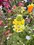
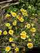

Varieties of California Wildflowers
-
California Poppy
A special poppy unlike any other, California's signature state flower populates fire-burned hills in an explosion of luminous orange color, drawing thousands of visitors to its hillsides for "poppy viewing." It grows easily in gardens and is lovely enough to be considered a domestic flower. It's extremely drought-tolerant and comes in many variations - from yellow-orange, to pink and yellow Mission Bell ripples, to lovely red varieties.
-
Clarkia
The exquisite flower of the California gold country, prized by settlers and Native Americans alike, is the largest of the California wildflowers, owing to its expansive shrubbery. Native to California but also the Pacific Northwest, the Clarkia also grows easily in Southern California, and reseeds itself abundantly once it dies down for more blooms the following year. Its lacy filigree flowers come in all shades of pink and purple, and the flower itself spreads and grows as high as five feet, providing a huge panoply of color to any garden.
-

Yellow Lupine
Second only to the California poppy, the desert lupine - shown here in yellow, is often grown with the distinctive state flower, coloring hillsides in a tapestry yellow and purple. Combined with the orange and red of the California poppies and the hillsides of the state become color riots unrivaled anywhere on earth. This lupine is shown growing with "Five Spot," another California wildflower. Desert lupine are tough and drought-tolerant once they come up, but more challenging than average to start from seeds.
-
Red Flax
It's not very well known but these glossy beauties, often grown in cottage gardens, are actually California natives. Sometimes known as 'red maids,' their intense red shades and continuous and lasting blooms add a pop of color to every kind of garden. They are officially annuals, but can also be perennials, blooming in more than one year instead of dying down and reseeding. They also come in watered down shades of pink. (Yes, cat Buffer got into the act on this picture.)
-
Chinese Houses
Some of the earliest, and longest-lasting blooms, these delicate cascading flowers in shades of purple, white and pink struck some of the early settlers of California from the east as similar to the Chinese houses of Chinese workers who came to San Francisco and Sacramento, and all through the California gold country work on the railroads in the late 1800s. They always come up first in California wildflower seedings and usually last through the season.
-

Tidy Tips
These wonderful yellow daisy-like flowers grow all over the state - in vacant lots and in mansion gardens, easily planted, easily harvested. They are abundant bloomers, and ttheir plants reach big sizes, always reseeding themselves for the following spring. They go wonderfully in bouquets and floral displays with lupine and poppies, creating a flawless color trifecta.